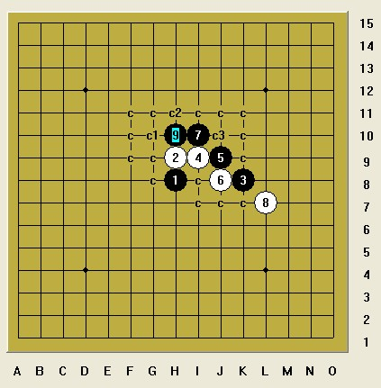
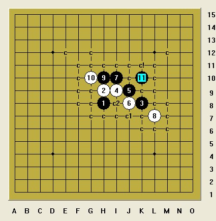

残月的一个5
#1 残月的一个5 作者：棋元道 发表时间：2014-5-6 15:46:50
#2 Re:残月的一个5 作者：灯塔连珠 发表时间：2014-5-7 10:11:36
不是必胜，但是黑棋优势很大，白棋有几个点已经不行了。#3 Re:残月的一个5 作者：自来水 发表时间：2014-5-7 10:24:08
印象中问题不大，你不如举两个盘端问题出来。。#4 Re:残月的一个5 作者：棋元道 发表时间：2014-5-7 14:35:36
#5 Re:残月的一个5 作者：棋元道 发表时间：2014-5-7 14:42:17
这个可以胜，白有哪些强防的走法？
#6 Re:残月的一个5 作者：日月丽天 发表时间：2014-5-7 18:29:22
4楼图变化在常规上属于溪峡对称打点的变化，但盘端不一样的情况，应该说先必胜的一个没有盘端的问题，而对称的一个却有盘端不一样的情况，可能因为对称点变化而让人懒得再去做。
#7 Re:残月的一个5 作者：日月丽天 发表时间：2014-5-7 18:34:01
正好这个有盘端问题的变化，我在大金星上遇到过，费点事还是做出来了，发两个图你看下，后面有什么问题再回复
 #8 Re:残月的一个5 作者：棋元道 发表时间：2014-5-8 20:33:11
#9 Re:残月的一个5 作者：棋元道 发表时间：2014-5-8 21:34:38
#10 Re:残月的一个5 作者：自来水 发表时间：2014-5-8 21:44:24
你可以直接照着谱扫。。
#11 Re:残月的一个5 作者：山城刀客 发表时间：2014-5-9 0:37:21
这个通溪月弱4，屏蔽大师发过谱的，我又扫了一次。
 溪月败4.rar
溪月败4.rar
#12 Re:残月的一个5 作者：棋元道 发表时间：2014-5-11 17:21:03